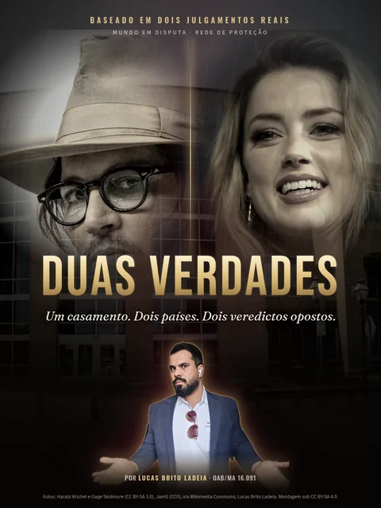

Santa Clara, Califórnia, domingo, 8 de novembro de 2026. O conselho da maior fabricante de chips do mundo, peça central da corrida da inteligência artificial, publica uma nota curta. Diz que vai investigar, com diretores independentes e advogados de fora, se o próprio fundador e CEO, Jensen Huang, foi “alvo de um esforço de inteligência estrangeira”. Na segunda-feira, as ações abrem em queda forte. Ninguém foi acusado de crime. Ainda assim, a pergunta já está no ar: o que, exatamente, vai provar alguma coisa?
Casos assim não se decidem com discursos. Decidem-se com mensagens, registros de acesso, agendas, e-mails e celulares. E prova digital tem um defeito de nascença: pode ser alterada sem deixar marca visível. É por isso que o direito criou uma regra para acompanhar cada vestígio do primeiro toque até o fim: a cadeia de custódia.
Uma prova não fala só pelo que mostra. Fala também por onde passou. Quando ninguém sabe por quais mãos ela andou, ela perde a voz.
O que aconteceu, em ordem
- Outubro de 2026. O jornal The New York Times publica reportagens segundo as quais Jensen Huang manteve relação próxima com Alice Huang (sem parentesco com ele), empresária ligada à Megaspeed, empresa de computação em nuvem de Singapura e cliente da Nvidia. Segundo o jornal, autoridades americanas a consideram ligada à inteligência chinesa. A Reuters informou que não conseguiu verificar essas afirmações de forma independente.
- Depois das reportagens. Parlamentares republicanos da Câmara dos Estados Unidos pedem a Huang explicações em sessão fechada, citando segurança nacional, segundo The Guardian e Reuters.
- 8 de novembro de 2026. O conselho da Nvidia anuncia uma investigação independente, conduzida por um comitê de diretores independentes com apoio de advogados externos. A nota afirma que o conselho “não tem razão para acreditar” que a segurança nacional ou segredos da empresa tenham sido comprometidos e que Huang apoia a apuração e vai cooperar. No mesmo dia, Huang envia mensagem aos funcionários em que trata de uma questão pessoal e reafirma o apoio à investigação.
- 9 de novembro de 2026. As ações da Nvidia abrem em queda de 4% a 8%, conforme o horário e o veículo (Al Jazeera, AP, CNBC, Reuters e The Guardian). As estimativas de perda de valor de mercado variaram de cerca de US$ 270 bilhões a mais de US$ 330 bilhões. O Ministério das Relações Exteriores da China classifica a acusação de espionagem como infundada.
O que está em disputa
- A tese das reportagens: Huang teria sido aproximado, de forma deliberada, por alguém a serviço de um governo estrangeiro, num momento em que os Estados Unidos restringem a venda de chips avançados para a China.
- A posição da Nvidia: o conselho diz não ter razão para crer que segredos foram comprometidos. A empresa já havia dito que os encontros de Huang com clientes eram rotina e que suspeitas de desvio ilegal de chips tinham sido refutadas no ano anterior, segundo declaração citada pela CNN Brasil.
- A posição da China: nega qualquer operação e chama as acusações de difamação.
- A posição de Alice Huang: não respondeu aos pedidos de comentário do New York Times nem da Reuters. Nas fontes consultadas, não localizamos acusação formal contra ela.
Repare no que falta: até aqui, quase tudo são versões. Nenhum tribunal analisou documento algum. É exatamente nesse vazio que a cadeia de custódia passa a importar.
Investigação interna não é investigação do Estado
O que a Nvidia abriu é uma apuração privada. O comitê não tem poder de polícia: não faz busca e apreensão, não quebra sigilo de terceiros, não obriga ninguém a depor. Trabalha com o que a empresa já tem ou com o que as pessoas entregam voluntariamente, como e-mails corporativos, aparelhos da empresa e registros de sistemas.
Isso tem duas consequências. A primeira: o relatório interno pode orientar decisões da empresa, mas não condena ninguém. A segunda é menos óbvia: se esse material um dia chegar a uma autoridade, chegará com uma pergunta colada nele. Quem coletou, como, quando, com qual ferramenta, e como se garante que nada mudou desde então?
A investigação interna escolhe o que coletar. A Justiça, depois, pergunta como foi coletado. Quem não pensou na segunda pergunta já respondeu mal à primeira.
E se fosse no Brasil?
1. A cadeia de custódia está na lei desde 2019
O Pacote Anticrime (Lei 13.964/2019) incluiu no Código de Processo Penal os arts. 158-A a 158-F. A definição é do art. 158-A: cadeia de custódia é “o conjunto de todos os procedimentos utilizados para manter e documentar a história cronológica do vestígio coletado em locais ou em vítimas de crimes, para rastrear sua posse e manuseio a partir de seu reconhecimento até o descarte”.
O art. 158-B descreve dez etapas: reconhecimento, isolamento, fixação, coleta, acondicionamento, transporte, recebimento, processamento, armazenamento e descarte. Os artigos seguintes exigem coleta preferencialmente por perito oficial (158-C), recipientes lacrados com numeração individual e registro de cada rompimento de lacre (158-D), central de custódia com registro de quem acessou o vestígio, com data e hora (158-E), e devolução do material à central depois da perícia (158-F).
2. No mundo digital, o lacre é um número
Um celular pode ser lacrado num saco plástico. Os dados dentro dele precisam de outro tipo de lacre. A prática forense é fazer uma cópia integral, bit a bit, do conteúdo do aparelho e calcular sobre ela um código hash, uma espécie de impressão digital do arquivo. Se um único bit mudar, o código muda inteiro. Comparando o hash da coleta com o da perícia, ou com o de uma repetição em juízo, dá para saber se a prova foi tocada.
Foi o que a Quinta Turma do Superior Tribunal de Justiça descreveu em fevereiro de 2023, num processo sob segredo de justiça noticiado pelo próprio tribunal: são inadmissíveis as provas digitais sem registro documental dos procedimentos adotados pela polícia para preservar sua integridade, autenticidade e confiabilidade. No caso, os equipamentos tinham sido analisados pela própria instituição financeira vítima antes da perícia oficial, sem documentação de como os dados foram extraídos. As provas derivadas também caíram, por aplicação analógica do art. 157, § 1º, do CPP.
O hash não diz se a mensagem é verdadeira. Diz só que ninguém mexeu nela. Às vezes, é tudo o que o processo precisa saber.
3. Print não é extração
Em 2024, a Quinta Turma do STJ voltou ao tema num habeas corpus relatado pelo ministro Joel Ilan Paciornik. A polícia tinha consultado o celular diretamente e usado prints de conversas, sem ferramenta de extração e sem documentar as etapas. O tribunal considerou a prova imprestável e mandou o juiz de primeiro grau verificar se havia outras provas capazes de sustentar a condenação.
4. Quebrar a cadeia não anula tudo automaticamente
Há um contrapeso. A Sexta Turma do STJ decidiu, no HC 653.515, que a quebra da cadeia de custódia não gera nulidade obrigatória: o juiz deve confrontar a irregularidade com as demais provas e decidir se a prova questionada ainda é confiável. Só depois disso pode afastá-la. Em processos do júri, a mesma Sexta Turma já entendeu que a irregularidade precisa ser apontada no momento certo, antes da pronúncia, sob pena de preclusão (REsp 1.825.022).
5. O que acontece com uma prova sem custódia
- Pode ser declarada inadmissível e retirada do processo, com as provas que dela derivarem (Constituição Federal, art. 5º, LVI, e CPP, art. 157).
- Pode perder peso, mesmo que fique nos autos, quando o juiz conclui que ela não é confiável o bastante para sustentar uma condenação.
- Pode sobreviver, quando outras provas independentes confirmam o mesmo fato (CPP, art. 157, §§ 1º e 2º, sobre a fonte independente).
6. E fora do processo penal?
No processo civil, a regra é mais flexível, mas não ingênua. Fotografias digitais e a forma impressa de mensagens eletrônicas valem como prova, mas, se a outra parte impugnar, é preciso apresentar a autenticação eletrônica ou fazer perícia (Código de Processo Civil, art. 422, §§ 1º e 3º). A ata notarial, em que um tabelião atesta o que viu numa tela, também pode registrar dados de imagem e som (CPC, art. 384).
7. A empresa pode investigar o próprio empregado?
Pode apurar fatos dentro dos próprios sistemas, mas com limites. A Constituição protege a intimidade (art. 5º, X) e o sigilo das comunicações (art. 5º, XII). Acessar a conta pessoal ou o celular particular de alguém sem autorização ou ordem judicial pode contaminar justamente a prova que se queria produzir. Uma investigação corporativa séria documenta cada passo como se, um dia, tivesse de prestar contas a um juiz.
As perguntas que o caso deixa no ar
- Se houver mensagens entre os envolvidos, elas serão extraídas por ferramenta forense, com hash registrado, ou chegarão como prints?
- Quem guarda o material coletado pelo comitê: a empresa, os advogados externos ou um perito independente? Há registro de cada acesso?
- Um relatório interno pode ser usado por autoridades? Em que condições a defesa poderá conferir a origem de cada documento?
- Informações de inteligência, por natureza sigilosas, podem embasar uma conclusão pública sem que a outra parte veja a prova?
- Quanto vale uma reportagem como prova? No processo, ela é ponto de partida para investigar, não substituto da investigação.
Situação atual
Alegação
Segundo reportagens do New York Times e do Financial Times, autoridades americanas suspeitam que Jensen Huang tenha sido alvo de uma aproximação ligada à inteligência chinesa. A Nvidia diz não ter razão para crer que segredos foram comprometidos. A China nega. Alice Huang não se manifestou publicamente.
Decisão
Não há decisão judicial conhecida sobre o caso. Há uma decisão corporativa: em 8 de novembro de 2026, o conselho da Nvidia abriu investigação independente, ainda sem prazo divulgado.
Fato comprovado
A investigação interna existe e foi anunciada pela própria empresa. Huang declarou apoiar a apuração. Ninguém foi formalmente acusado de crime nas fontes consultadas.
Situação conferida em 9 de novembro de 2026, com base no comunicado do conselho da Nvidia e nas reportagens indicadas nas fontes.
O que fica para quem não é famoso
A mesma lógica vale para uma ameaça no WhatsApp, uma conversa usada numa separação ou um celular apreendido numa busca. Um print solto pode ser contestado. Uma conversa preservada com método é muito mais difícil de derrubar. E, do outro lado, quem é acusado com base em prova digital tem o direito de perguntar por onde ela passou. Veja também como demonstrar que uma conversa de WhatsApp foi apresentada fora de contexto e se a polícia pode acessar todas as conversas de um celular apreendido.
E se a conversa que importa está no seu celular, como guardá-la sem estragar a prova? Veja Como preservar conversas, áudios e arquivos e documentar ameaças sem comprometer a autenticidade.
Fontes consultadas
- Nvidia: Statement From NVIDIA Board of Directors (8/11/2026)
- CNN Brasil: Nvidia investiga CEO após preocupações sobre inteligência estrangeira (8/11/2026)
- Reuters (via Investing.com): Explainer: what we know about Nvidia's probe into CEO Jensen Huang (9/11/2026)
- The Guardian: Nvidia opens investigation after report CEO Jensen Huang was target of foreign intelligence (8/11/2026)
- AP: Internal probe into CEO Jensen Huang and 'foreign intelligence' weighs on Nvidia shares (9/11/2026)
- NPR: Nvidia launches investigation into CEO's alleged relationship with Chinese spy (8/11/2026)
- STJ: Entendimentos do STJ sobre a quebra da cadeia de custódia (23/04/2023)
- STJ: Provas digitais devem ser colhidas com metodologia adequada (02/05/2024)
- Planalto: Código de Processo Penal (arts. 157 e 158-A a 158-F)
- Planalto: Lei 13.964/2019 (Pacote Anticrime)
- Planalto: Código de Processo Civil (arts. 384 e 422)
- Planalto: Constituição Federal (art. 5º, X, XII e LVI)
Imagem da capa
- Composição editorial da Rede de Proteção: aparelho lacrado em saco plástico com etiqueta de evidência, sem pessoas nem marcas.
Próxima fita

Na prateleira de Reputação e prova digitalDepp x Heard: o mesmo casamento, dois tribunais e dois veredictos opostosUm casamento. Dois países. Dois veredictos opostos.Ler a próxima →Para entender o seu caso, na Rede


Lucas Brito Ladeia é advogado inscrito na OAB/MA sob o nº 16.091. Esta matéria analisa um caso público a partir de decisões e fontes abertas, indicadas acima, e separa o que foi alegado, o que foi decidido e o que está comprovado. Tem caráter informativo e não substitui a análise individual de cada caso.